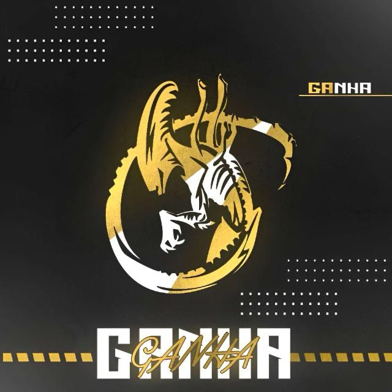

Standoff 2" é um popular jogo de tiro em primeira pessoa (FPS) disponível em dispositivos móveis IOS, ANDROID e MIUI que foi lançado como uma sequência do também popular "Standoff". O jogo é desenvolvido pela Axlebolt e é conhecido por sua jogabilidade competitiva e ação intensa.
Segue uma listagem de funções e descrições do jogo
ENTRE OUTRAS
Cla ganha foi criado na intenção de
focarmos para o competitivo do jogo
Nome do clã = Lobby do ganha
Tag [GANHA]
